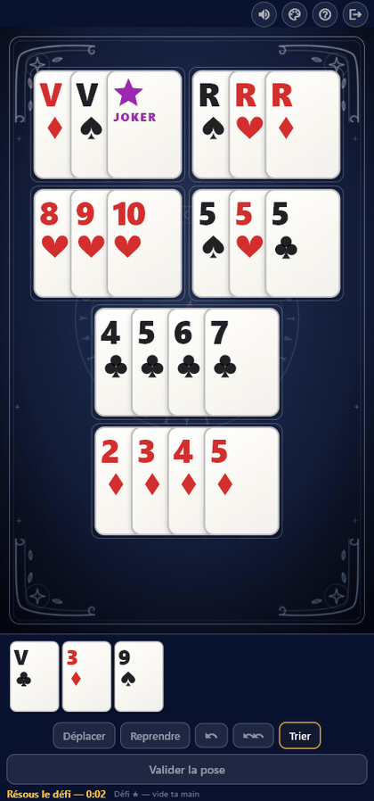
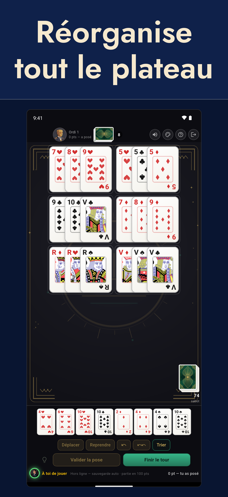
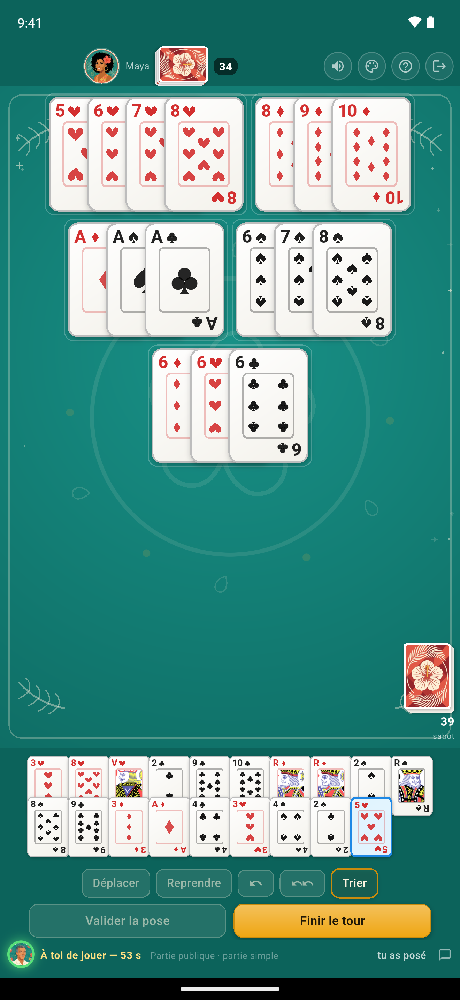
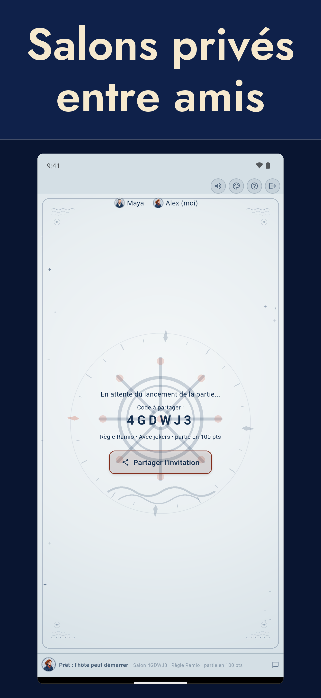
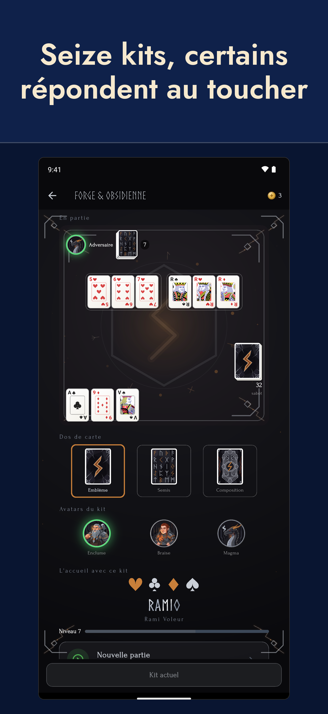

Français · English · Español · Deutsch · Italiano · Português · Polski · Türkçe · Română · Magyar · العربية
Ramio
Ramio, c’est le rami voleur — aussi appelé rami chinois — à jouer entre amis où que vous soyez. Vous ne posez pas seulement vos cartes : vous démontez et recomposez celles qui sont déjà sur la table pour y glisser les vôtres.

Essayer Ramio
L’application est en bêta ouverte, gratuite et sans publicité.
Android — installer depuis Google Play iPhone — rejoindre la bêta TestFlight
Sur iPhone, la bêta passe par l'application TestFlight d'Apple.




Les règles du rami voleur (rami chinois)
Le rami voleur — ou rami chinois — se joue de 2 à 4 joueurs, avec deux jeux de 52 cartes, avec ou sans jokers. L’essentiel est résumé ci-dessous ; le guide complet, avec le détail des points et les différences avec le rami classique et le Rummikub, est sur la page Règles du rami chinois.
Le but du jeu
Être le premier à se débarrasser de toutes ses cartes en les posant sur la table, sous forme de combinaisons :
- Suite : au moins trois cartes qui se suivent, de la même couleur (l’As peut se placer avant le 2 ou après le Roi, mais la suite ne « tourne » pas : Roi-As-2 est interdit).
- Brelan ou carré : trois ou quatre cartes de même valeur, de couleurs toutes différentes.
Le déroulement
- Chaque joueur reçoit 13 cartes.
- À son tour, un joueur pioche une carte, puis peut poser des combinaisons sur la table. On ne se défausse jamais : la main ne diminue qu’en posant.
- Première pose : pour commencer à poser, il faut d’abord une tierce franche — trois cartes qui se suivent, de la même couleur, sans joker.
- Une fois sa première pose faite, le joueur peut aussi réorganiser librement la table (déplacer, découper, recombiner les poses de tout le monde) pour caser ses cartes, tant que la table reste entièrement valide à la fin de son tour.
- Le joker remplace n’importe quelle carte. Sur la table, il peut être réutilisé lors des réorganisations, tant qu’il reste sur la table. Les jokers sont optionnels : chaque partie se crée avec ou sans.
La fin de manche et les points
La manche s’arrête quand un joueur a vidé sa main. Les autres comptent leurs pénalités : les cartes 2 à 10 valent leur valeur, les figures 10, l’As 11 et le joker 20 ou 50 points (50 dans la version actuelle de l’application). Si la pioche s’épuise avant qu’un joueur ait fini, la manche s’arrête et chacun compte les points restants dans sa main. Les pénalités s’additionnent de manche en manche ; la partie se termine dès qu’un joueur atteint 100 points, et le joueur le moins pénalisé gagne. L’application propose aussi une partie simple : une seule manche gagnante, idéale pour une partie rapide.
L’application Ramio
- Salons privés entre amis (code à 6 caractères) ou parties publiques
- Solo contre l’ordinateur, même sans connexion, à quatre niveaux
- Plus de 300 défis de recomposition, et un défi du jour commun à tous
- Duels de rapidité : le même défi pour tout le monde, le plus rapide gagne
- Avec ou sans jokers, partie aux points ou partie simple
- Amis, messagerie, classement Elo, statistiques et historique
- Une vingtaine d’ambiances : tapis, dos de cartes et avatars au choix
- Disponible en onze langues
- Reconnexion automatique en cas de coupure
- Aucune publicité, règles arbitrées par le serveur : impossible de tricher
Confidentialité et contact
- Politique de confidentialité
- Supprimer son compte
- Contact : ramio.contact@gmail.com